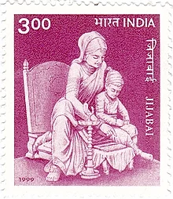

Lal Bahadur Shastri (2 October 1904 – 11 January 1966) was an Indian statesman who
served as the second prime minister of India. He promoted the White Revolution –
a national campaign to increase the production and supply of milk – by supporting
the Amul milk co-operative of Anand, Gujarat and creating the National Dairy Development Board.
Underlining the need to boost India's food production, Shastri also promoted the Green Revolution
in India in 1965. This led to an increase in food grain production, especially in Punjab, Haryana
and Uttar Pradesh.
Shastri was born to Sharada Prasad Srivastava and Ramdulari Devi in Mughalsarai on 2 October 1904.
He studied in East Central Railway Inter college and Harish Chandra High School, which he left to
join the non-cooperation movement. He worked for the betterment of the Harijans at Muzaffarpur and
dropped his caste-derived surname of "Srivastava". Shastri's thoughts were influenced by reading about
Swami Vivekananda, Gandhi and Annie Besant. Deeply impressed and influenced by Gandhi, he joined the Indian
independence movement in the 1920s. He served as the president of Servants of the People Society (Lok Sevak Mandal),
founded by Lala Lajpat Rai and held prominent positions in Indian National Congress. Following independence in 1947,
he joined the Indian government and became one of Prime Minister Nehru's key cabinet colleagues, first as Railways
Minister (1951–56), and then in numerous other prominent positions, including the Home Minister.
He led the country during the Indo-Pakistan War of 1965. His slogan "Jai Jawan, Jai Kisan" ("Hail to the soldier;
Hail to the farmer") became very popular during the war. The war formally ended with the Tashkent Agreement on 10
January 1966; he died the following day, still in Tashkent, with the cause of his death in dispute; it was reported
to be a cardiac arrest, but his family was not satisfied with the proffered reason. He was posthumously awarded the
Bharat Ratna.

Rajmata Jijamata
Rajmata Jijabai
mother of Chhatrapati Shiwaji Maharaj
Jijabai Bhonsle (or Bhonsale, Bhosale, Bhosle) or Jadhav (12 January 1598 – 17 June 1674), referred to as Rajmata,
Rastramata, Jijabai or Jijau, was the mother of Shivaji, founder of the Maratha Empire. She was a daughter of Lakhujirao
Jadhav of Sindkhed Raja.
History
Jijabai was born on 12 January 1598, to Mahalasabai Jadhav and Lakhuji Jadhav of Deulgaon, near Sindkhed,
in present-day Buldhana district of Maharastra. Lakhojiraje Jadhav was a Maratha noble. Jijabai was married
at an early age to Shahaji Bhosle, son of Maloji Bhosle of Verul village, a military commander serving under
the Nizam Shahi sultans. She taught Shivaji about swarajya and raised him to be a great warrior. Jijabai died
on 17 June 1674. C.V. Vaidya in his book Medieval India, states that Yadavas are "definitely pure Maratha Kshatriyas".
Jijabai (the mother of Shivaji, who founded the Maratha Empire) belonged to the clan of jadhavas of Sindkhed Raja,
who also claimed descent from the Ahirs/Yadavas.
Jijabai on a 1999 stamp of India. Life and work
When Shivaji was 14 years old, Shahaji Raje handed over the Jagir of Pune to him. Of course, the responsibility of
managing the Jagir fell on Jijabai. Jijabai and Shivaji arrived in Pune with skilled officers. Due to the persistent
interests of Nizamshah, Adilshah and Mughals, the condition of Pune was very bad. Under such adverse circumstances,
she along with Dadoji Kondadeo redeveloped the city of Pune. She plowed the farmland with a golden plow, giving
sanctuary to the locals. She was responsible for the education of the kings. Jijabai told Shivaji stories from the
Ramayana, the Mahabharata, which began and ended in independence. How mighty was Rama who killed Ravana who was
depriving Sita, how mighty was Bhima who killed Bakasura and rescued weak people, etc. Because of these rites given
by Jijabai, Shivaji Raje happened. Jijabai not only told the story but also gave the first lessons of politics by
sitting next to the chair.
She was also a skilled horse rider. She could wield a sword very skillfully. She managed her husband's Jagir in
Pune and developed it. She established Kasba Ganapati Mandir. She also renovated Kevareshwar Temple and Tambadi Jogeshwari
Temple.
Death
She died on 17 June 1674 at Pachad village near Raigad Fort. At that time it was only twelve days since the coronation
of Shivaji.